Slider Revolution Responsive WordPress Plugin
The Documentation
This part of the documentation is going to cover, in a step by step instruction the installation of WP Plugins on your WordPress blog in general.
Step 1. The most important task is to make certain you have an upto date backup of your installation! This is always a good thing, not necessarily so important for our plugin but in general.
Step 2. Log into your WordPress Admin area.
Step 3. Look down the left hand column for “Plugins” and then click on the word “Plugins”.
Step 4. Just to the right of the title “(Manage) Plugins” in the image above, you can see a button marked “Add New”, click this button.


Step 5. The image above shows the option to upload the plugin from your own PC, this is the revslider.zip inside the zip you had previously downloaded from CodeCanyon. Install the zip and click on "Activate Plugin".
Should you ever experience slight upload problems then please stay calm, simply use an FTP program to access your blog, then browse to /public_html/wp-content/plugins and upload the unzipped slider here. Then check out the Plugin page and activate the plugin.
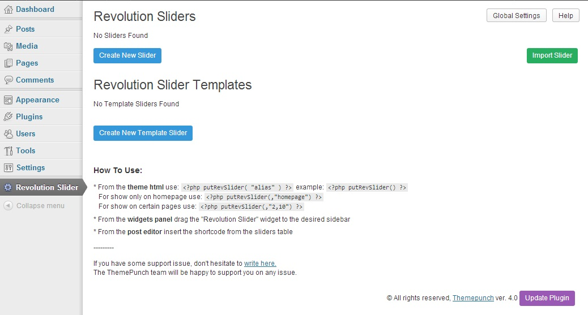
How to create new Slider ?
-
Select the New Installed Revolution Slider
-
Press Create New Slider

Your First Slider
-
Set the Slider Title and the Slider Alias (please don't use special chars and spaces here !)
-
Select your Layout and Settings and press Create Slider. (below you will see a Description for each settings in and Possibilities)
Editing Main Settings
-
Once you Created a Slider, you can open the Slider Settings (Settings) any time to manage any general settings per Slider
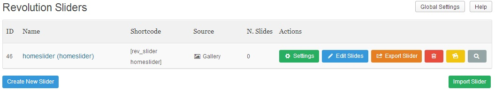
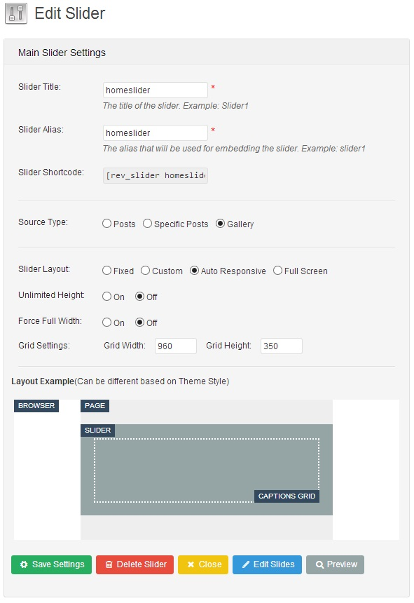
Slider Title
A Internal used Name for the Slider. Only for Backend Usage
Slider Alias
An individual name of the slider. Dont use Speical chars and spaces here. This will be used for ShortCode embeding and for any other art for embeding and corresponding / link internal to the slider.
Slider Shortcode
This is the Shortcode to embed into your Wordpress Pages, widgets etc.
Source Type
-
Posts
Pull content for the slides from Wordpress Posts by Categories and/or Tags
-
Specific Posts
Pull content for the slides from specific choosen Wordpress Posts
-
Gallery (this was the only type in previous versions)
This is the default type, no content from other sources will be pulled.
This type will be used most of the times.
Slider Layouts
-
Fixed
A None Responsive Version of the Slider. Will have a prepared Width and height. Used for Older Themes
-
Custom (it has been called "Responsive" in Earlier version)
A Custom Grid system to set size of Slider per Browser Size. You can define different Levels for sizes. Only used for Frameworks where no Fluid Widths has been used. (i.e. Skeleton)
-
AutoResponsive (it has been called "Fullwdith" in earlier versions)
Used for Fluid Responsive themes, where the Slider calculates its onw size for every Browser size. Only max widt hand height of Grid should be defined. In case the Container Width is not Boxed, it will go Fullwidth Automatically
-
FullScreen
Slider will take the height of Window and center the preseted Grid within. It will always try to go FullHeight and Fullwidth if the wrapping container allows.
Please be sure to set a minimum height on FullScreen setting. This will make sure that the Slider won't be really small in height on mobile devices and that it will have a height if it is not in the visible field on pageloading.
Grid Settings
Depending on the Layout you can set the Width and Height of the Captions. The Slider will go Fullwdith or Fullwidth and Fullheight in case you set AutoResponsive or FullScreen. Caption Grid will be centered always within the slider container.
In some cases (Custom) you can set multiple Levels depending on Screen Size. This is not needed in AutoResponsive and FullScreen mode.
Fullscreen mode allows you to set a Container (per class or ID) which heights decrease the height of the FullScreen Slider Container automatically in every responsive level
Layout Example
Here you can see how the Slider will be seen on your Site, depending on what Settings you use in the Slider Layout and the two options "Unlimited Height" and "Force Full Width"
Save Settings
It updates your last settings to the Slider. If it is not pressed and you leave the Main Settings panel, your settings will be lost.
Delete Slider
Delete your current Slider.
Edit Slides
Open the Edit Slide Panel for further settings per Slide
Preview Slider
Preview the current Slider with all its slides and settings in an iframe.
General Settings
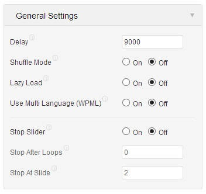
Delay
Set the Delay Globaly for each slide. You can modificate the Delay Time per Slide under the Edit Slide function.
Shuffle Mode
Random Order of Slides on/off
Lazy Load
Use Dummy images during Document Load. Main images per slider are loaded on Demand when the slide is shown first time.
Use Multi Language (WPML)
If WPML is installed, this enables the multilanguage option for the Slider. After this is set to true, you can choose in which languages each slide can be seen, and each slide can have multiple versions for each language with own captions and so on.
Stop Slider
Use this setting to stop the Slider after a predefined Loop and at a predefined Slide. Loops 0 means in the first loop to stop and Stop At Slide 1 would stop directly at First slide. i.e. Stop After Loops 2 and Stop At Slide 3 would stop the slider after 2 Loops ath the 3thd slide.
Google Fonts
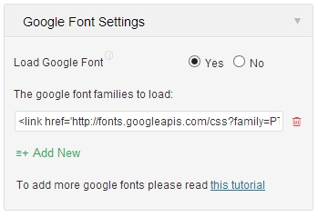
Used for Google Font Embeding in Slider. You can add unlimited Fonts here, all of them will be available in the CSS Editor.
-
Visit The Google Font Page and search for your Font
-
Click on Quick Use and Select Standard Tab. Add this code into the textfield.
-
To add more fonts, click on Add New (Screenshot)
See also Caption HOW TO USE GOOGLE FONT later below
Position
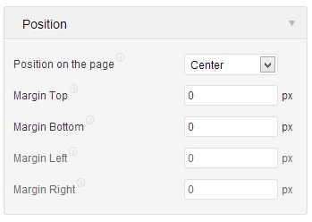
The Position of the Slider within the Contaienr which is wrapping the slider.
Appearance
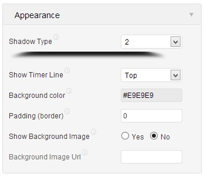
Shadow Type
Choose between different Shadow Effects under the slider. Shadow Height is excluded of the Slide Height ! You may need to set extra margin bottom via the Position Settings !
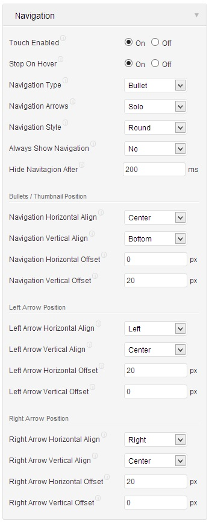
Touch Enabled
Turns on the Swipe function for navigation on mobile devices
Stop On Hover
Stops the Main slide Timer on MOuse Hover. Captions are still playing within the slide
Navigation Type
Set the Layout of navigation. Only Bullets, Bullets and Arrow, Thumbnails or None
Navigation Arrows
Choose between custom positions (solo) or Fixed position next to the bullets /thumbnails.
Navigation Style
The Style / Art of the Navigation
Positions
Per Bullet, Navigation Arrow you can set a Position per Align and per Offsets. I.e. Left Center aligned arrow still can have an offset to move it in different directions
Thumbnails
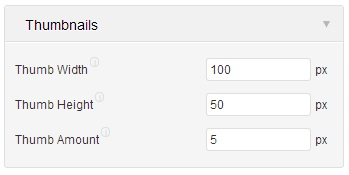
Thumbnail Width and Height and shown Amount of Thumbs in same time. On Hover the Thumbs are scrolled.
Mobile Visibility
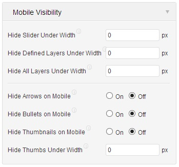
Hide Slider Under Width
The Slider will be hidden and stopped if the Browser Size goes under this presetted Size. Works only if Custom Sizes set to Slider
Hide Defined Layers under Width
Hides predefined Captions if the Browser Size is smaller then this predefined size. To select Captions to hide, go in the Slide Editor and turn on / off the option on the Captions one by one.
Hide All Layers Under Width
Hides All Captions if the Browser Size is smaller then this predefined size.
Hide Arrows/Bullets/Thumbnails on Mobile
Hides chosen navigation type if the Slider is viewed on a Mobile device.
Alternate First Slide

You can set a different First Slide than the Slides Order use. You can set also a different First Transition then it defined in the Slide Editor to make sure that the first Transition is some Eye Catching animation, but later only use the Slide transitions i.e
Troubleshooting
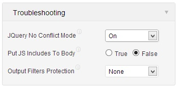
In Some Theme the Output of the Slider is broken, filled due br and p tags. Also some theme has jQuery conflicts or embedding the jQuery library in a way which would break the slider. In this case please turn on the Output Filters, and try the different settings to see if the Output art fix your issue. (most Problem solved by setting this to "by Echo Output")
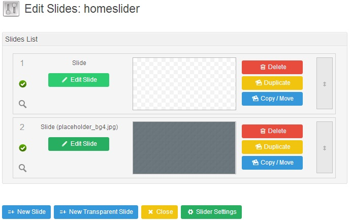
Add New Slide to the Slider
Click on Slide Editor to get in the Overview of the Slides added in the Slider. If there are no Slides added yet, New Slide or New Transparent Slide can be used to add Slides to the Slider. Add New Slide can be done also in the TAB View once the Edit Slide View is opened. See Later Below.
Delete/Duplicate/Copy/Move
Each Slide can be Deleted, Duplicated, Copied or Moved into an other Slider !
Turn On/Off Publishing of the Slider
During Editing/Modification the Slide it is clever to turn off the Visibility on Frontend. CLick simple on the
Drag And Drop to Reorder
Simple Drag and Drop the slides to reorder them. Use the 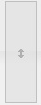 for this.
This can also be done in Slide Edit Mode by dragging and reordering the tabs on the top.

Navigate between the Slides simple selecting The Tabs on the top. Dont forget to Update the Slide before you Leave one tab !
Each Slide has its own Genearal Setting. You can set transitions, Local delays, thumbnails etc. here.
Slide Title
Used only Internal Naming of the slides
State
Published / Unpublished - used for Editing, modificating the slide. If it is Unpublished, frontend wont show this slide at all.
Visible From/Until
If set, the Slide will only be visible between the set times.
If Visible Until is not set, the Slide will be visible as soon as the Visible From date is reached.
If Visible From is not set, the Slide will be visible until the Visible Until date is reached.
Transitions
The Animation Style how the Slide appearance. You can select more than one from a multiplie choise drop down list. Every new loop will use an other Transition if you selected more then one.
Slot Amount
The Amount of Boxes / Slots the slides divided into during the animation.
Rotation
The Rotation Degree on Simple Transitions. (-720 - 720, 999 = random)
Transition Duration
The Duration of the Transition. (Default 300, min 100 max 2000 ms)
Delay
A Local Delay for Slide. It overwrites the Global setting
Enable Link
it allows a Full width/height link on the Slide. You can set Link Target and LInk URL here, or a Built in function like swap to slide X, previous Slide, Next Slide
The Image Source for the Main Image
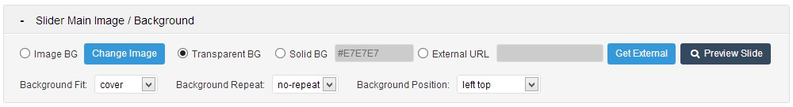
A Slide can have an Image, Transparent Image, Solid Color or External Image as Main Image. This Image is the "Main Layer" in the background which has been animated via the General Settings predefined Transtions parameter.
Background Fit/Repeat/Position
With these options, the chosen background image can be adjusted
Ken Burns Effect / Pan Zoom Effect

This effect is available ony for Image BG and External URL.
- Background Start Position defines the Position where the Ken Burns effect will start. This can be directly seen in the Drag & Drop Editor
- Background End Position defines the Position where the Ken Burns effect will end.
- Start Fit/End Fit defines the Pan Zoom the image will be at the Start/End. The Start Zoom can be directly seen in the Drag & Drop Editor
- Easing defines the easing the Background Image will have
- Duration defines the duration all the effects will take. Default is the Slide duration.
The Drag And Drop Editor
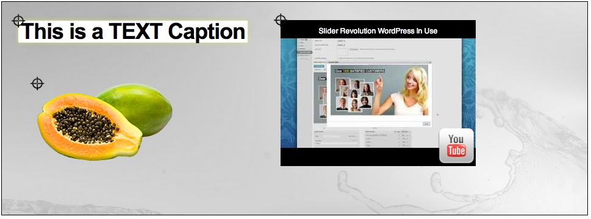
Here you can Drag And Drop Move any Added Layer. The Best Way to move the Elements in the Right Position. Items are default aligned to left / top but via the Layer Styleing you can select different Aligns.
You can choose from following layers / captions: HTML Markups, Image, Video
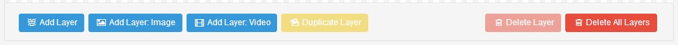
For individual TEXT / HTML Markup Layer click on Add Layer and follow the following settings:
Style / Edit Style / Edit Global Styles
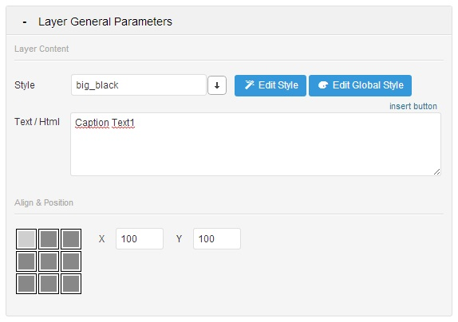
To define a predefined Style or add your own Style use the Style Drop Down list. You can change the Styling of the captions / Layers via the Embeded CSS Editor (Edit Style)
Use HTML5 Standard markups in case you wish to embed paragraphs, headings, buttons etc.
The Captions have the white-space:nowrap setting default. It is important because of the transitions. Please use <br> for linebreaking, or add different layers for multiple lines.
For further styling that is not possible through Edit Style, use the Edit Global Styles and put your Styles there.
Align & Positions
Set the Align of the Layers / Captions. Left Top is default. Drag and Drop move of the Layer will based on the Align. If you set the Align to Center Center, the Drag And drop will be based on this aligned position and use an Offset.
i.e. Center Center Offset X -100px Offset Y -100px will be used in every reposnive size linear calculated. If the Screen size is scaled to 50% than the Item is still in the middle of the grid and offset is -50px -50px (linear calculated).
Center Center snaps the Center Center of the Layer to the Center Center position of the Gird. Right Bottom snaps the Rightr bottom corner of the Layer to the Right Bottom corner of the Grid et.c..
Layer Animation
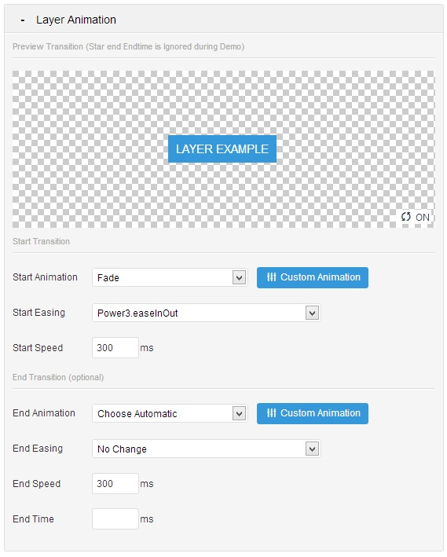
Start Transition
The way the Caption appear on the screen. Select one of the Aniamtion , Easing and Speed.
End Transition
Optional. If not set, the Reverse Aniamtion will be used as set in the Start Transtion.
In case the slide sould stay all the time on the slide, but end animation should be different then Start animation, please select your End animation, and set End Time to the same as the Slide Delay. If no End Time set, End animation will be ignored !
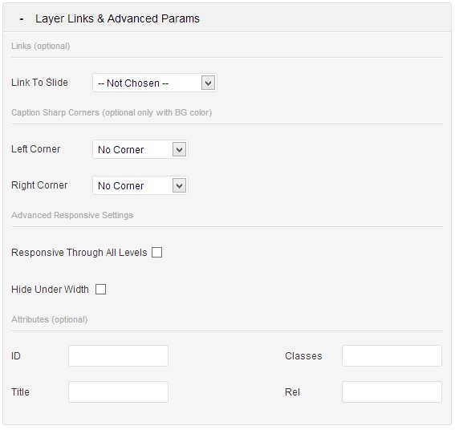
Link to Slide
Set a Special Link, like Swap to Previous / Next slide, Predefined Slide, Scroll Under the Slider etc.
Left Corner / Right Corner
Draw a Sharp Corner of the Caption. Only works if Background Color has been set for Caption
Responsive Through All Levels
If set, all HTML COntainers within this Caption are resized linear to Slider Sizes. Default turned off, and only top level markup within Caption is resized
Hide Under Width
Hide Caption under a certain width. This is useful, to have a more clear slide on mobile devices i.e.
Attributes
Set extra attributes into the caption, like extra classes, IDs or title
You can choose from following layers / captions: HTML Markups, Image, Video
For an individual Image Layer click on Add Image Layer and follow the following settings:
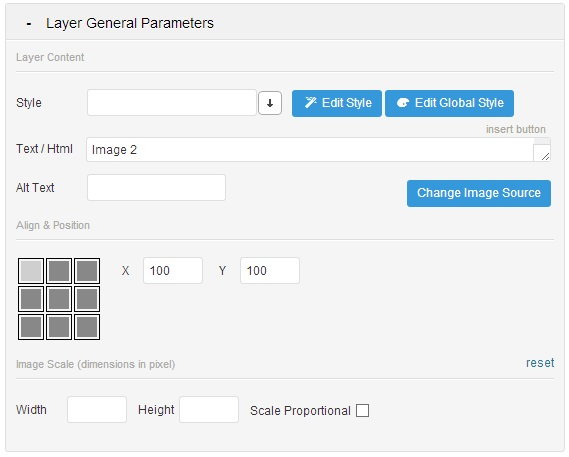
Style / Edit CSS
To define a predefined Style or add your own Style use the Style Drop Down list. You can change the Styling of the captions / Layers via the Embeded CSS Editor (Edit Style)
Use HTML5 Standard markups in case you wish to embed paragraphs, headings, buttons etc.
The Captions have the white-space:nowrap setting default. It is important because of the transitions. Please use <br> for linebreaking, or add different layers for multiple lines.
For further styling that is not possible through Edit Style, use the Edit Global Styles and put your Styles there.
Change Image Source
Change the Image Source itself
Alt Text
Set your own Alt Text here for SEO
Align & Positions
Set the Align of the Layers / Captions. Left Top is default. Drag and Drop move of the Layer will based on the Align. If you set the Align to Center Center, the Drag And drop will be based on this aligned position and use an Offset.
i.e. Center Center Offset X -100px Offset Y -100px will be used in every reposnive size linear calculated. If the Screen size is scaled to 50% than the Item is still in the middle of the grid and offset is -50px -50px (linear calculated).
Center Center snaps the Center Center of the Layer to the Center Center position of the Gird. Right Bottom snaps the Rightr bottom corner of the Layer to the Right Bottom corner of the Grid et.c..
Image Scaling
Change the Width/Height of the image, you can also scale the image proportional.
Start Transition
The way the Caption appear on the screen. Select one of the Aniamtion , Easing and Speed.
End Transition
Optional. If not set, the Reverse Aniamtion will be used as set in the Start Transtion.
In case the slide sould stay all the time on the slide, but end animation should be different then Start animation, please select your End animation, and set End Time to the same as the Slide Delay. If no End Time set, End animation will be ignored !
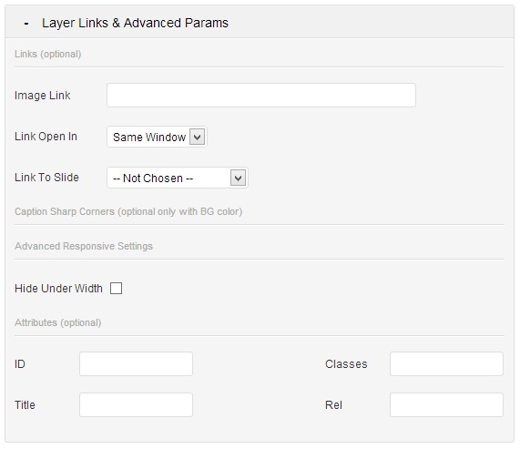
Image Link
The Link URL if Image has been clicked
Link Open In
The Link Target if Image has been clicked
Link to Slide
Set a Special Link, like Swap to Previous / Next slide, Predefined Slide, Scroll Under the Slider etc.
Hide Under Width
Hide Caption under a certain width. This is useful, to have a more clear slide on mobile devices i.e.
Attributes
Set extra attributes into the caption, like extra classes, IDs or title
You can choose from following layers / captions: HTML Markups, Image, Video
For individuall Video Layer click on simple Add Layer: Video and follow the following settings:
Choose from Youtbe / Vimeo / HTML5:
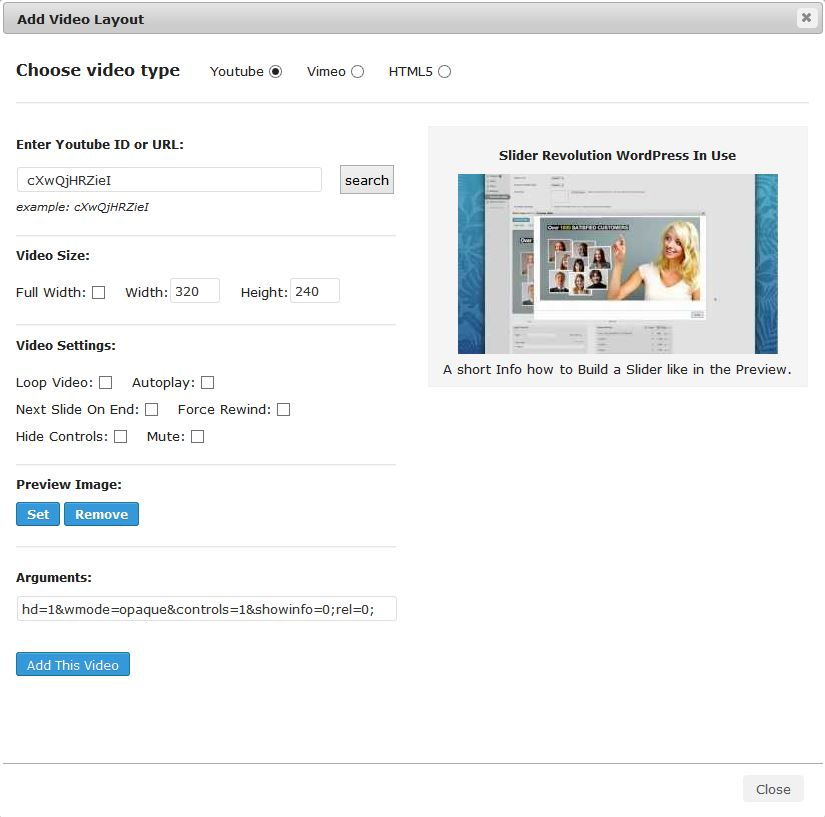

YouTube / Vimeo Settings
Enter ID / URL
Set the Vimeo / YouTuve Video ID here and Click on Search
Width / Height
Set the Basic Width and Height you wish to present your Iframe Embeded Video in the Slider
FullWidth
If selected, Video will be Shown in FullWidth Mode (within the Grid !) on the Slider
Video Loop
If selected, Video will be automatically looped
Preview Image
If set, the Video will have this as an overlay, the image will be automatic cropped at the output to fit the video size.
With a click on the Image, it will vanish and the video will start.
Arrguments
Set Indiivdual iFrame / Video Arguments here
AutoPlay
If Slide is loaded, video will play automatically
Note: enabling this setting will show the "Only 1st Time" option. Also checking this will have the effect that the video will only played one single time automatically
Next Slide on End
After Video has been played, next slide Transition starts automatically
Force Rewind
Video will always play from the beginning each time the Slide is shown
Mute
Video will be muted
HTML5 Video Settings
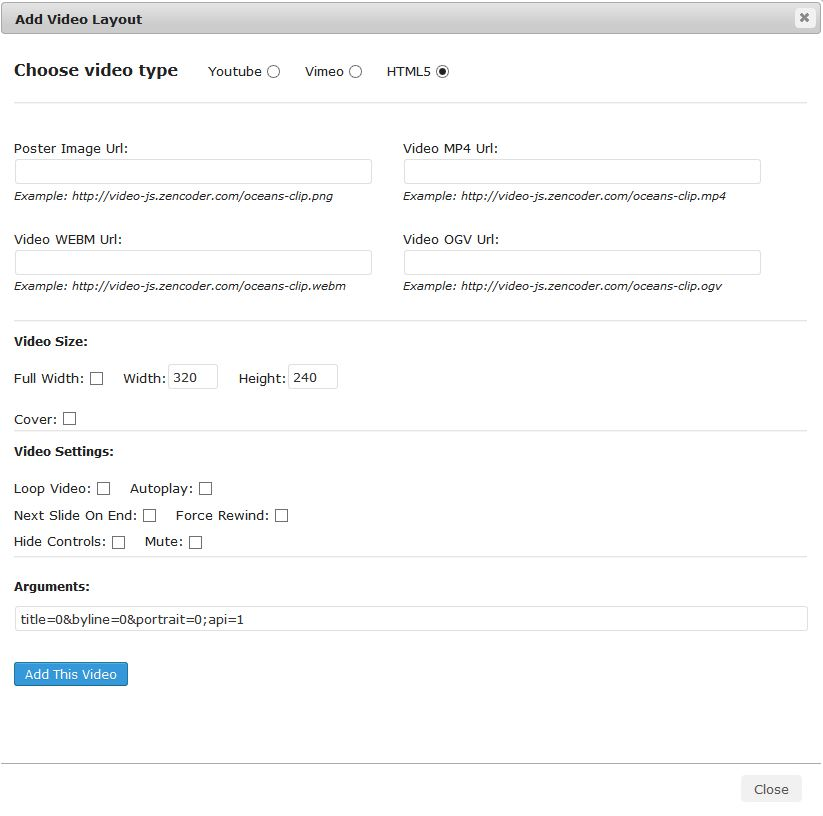
Enter Sources of Video (can set different Sources for Fallbacks)
Use an Image to show when Video is not Player
MP4/WEBM, OGV Sources should be added with Absolute Link
Width / Height
Set the Basic Width and Height you wish to present your iFrame Embedded Video in the Slider
FullWidth
If selected, Video will be Shown in FullWidth Mode (within the Grid !) on the Slider
Loop Video
If selected, the Video will loop
Autoplay
If checked, the Video will automatic play every time the Video appears on the Slide
Note: enabling this setting will show the "Only 1st Time" option. Also checking this will have the effect that the video will only played one single time automatically
Hide Controls
If selected, the Video will not have control buttons. This should be used with the autoplay option or the will probably not see that this is an video, that can be played.
Force Rewind
Video will always play from the beginning each time the Slide is shown
Mute
Video will be muted
Arrguments
Set Indiivdual iFrame / Video Arguments here
Style / Edit CSS
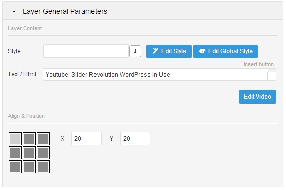
To Define a predefined Style or add your own Style use the Style Drop Down list. You can change the Styling of the captions / Layers via the Embedded CSS Editor
Use HTML5 Standard markups in case you wish to embed paragraphs, headings, buttons etc.
The Captions have the white-space:nowrap setting default. It is important because of the transitions. Please use <br> for linebreaking, or add different layers for multiple lines.
Edit Video
Open the Dialog Window as by Adding the Video Layer
Align & Positions
Set the Align of the Layers / Captions. Left Top is default. Drag and Drop move of the Layer will based on the Align. If you set the Align to Center Center, the Drag And drop will be based on this aligned position and use an Offset.
i.e. Center Center Offset X -100px Offset Y -100px will be used in every reposnive size linear calculated. If the Screen size is scaled to 50% than the Item is still in the middle of the grid and offset is -50px -50px (linear calculated).
Center Center snaps the Center Center of the Layer to the Center Center position of the Gird. Right Bottom snaps the Rightr bottom corner of the Layer to the Right Bottom corner of the Grid et.c..
Start Transition
The way the Caption appear on the screen. Select one of the Aniamtion , Easing and Speed.
End Transition
Optional. If not set, the Reverse Aniamtion will be used as set in the Start Transtion.
In case the slide sould stay all the time on the slide, but end animation should be different then Start animation, please select your End animation, and set End Time to the same as the Slide Delay. If no End Time set, End animation will be ignored !
Link to Slide
Set a Special Link, like Swap to Previous / Next slide, Predefined Slide, Scroll Under the Slider etc.
Left Corner / Right Corner
Draw a Sharp Corner of the Caption. Only works if Background Color has been set for Caption
Responsive Through All Levels
If set, all HTML COntainers within this Caption are resized linear to Slider Sizes. Default turned off, and only top level markup within Caption is resized
Hide Under Width
Hide Caption under a certain width. This is useful, to have a more clear slide on mobile devices i.e.
Attributes
Set extra attributes into the caption, like extra classes, IDs or title
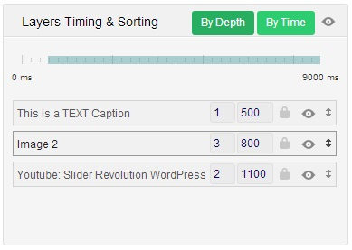
In the Layer Sorting Table you can drag and Drop the layers to change their z-Index or Start time automatically.
Choose "By Depth" for editing the z-index of the layer/caption.
Choose "By Time" for editing the Timing of the layer/caption.
Manually Editig is also possible.
Click on the "eye" icon to hide / show the Layer from the Drag & Drop Section above, for easy Editing of the captions.
Click on the "lock" icon to lock / unlock the Layer from the Drag & Drop Section above. If a layer is locked, it can't be dragged in the editor. This is useful if you have many captions and need exact positions that should not be changed anymore.
Clicking on one Layer selects that Layer for Further editing.
To add via Shortcode
-
Simply open the Revolution Slider Backend for the overview list of Sliders.
-
Copy the Shortcode you wish to embed in the page. (in the image below: [rev_slider homeslider]
-
Paste the Shortcode into your page.
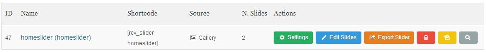
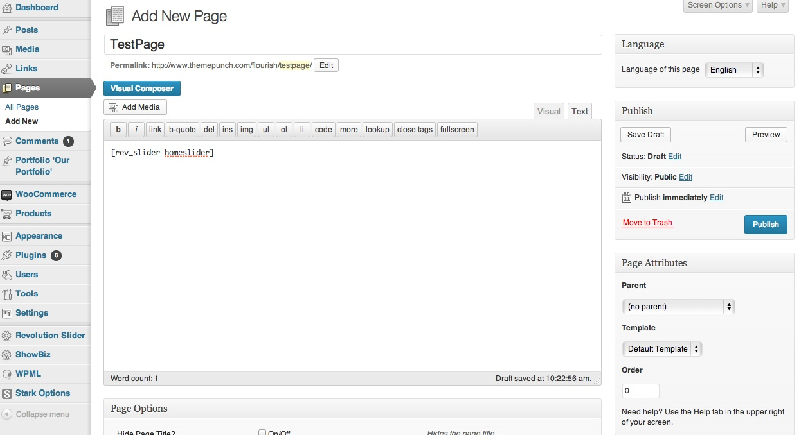
Alternative Ways to add the Slider to your Theme:
-
* From the theme html use:
<?php putRevSlider( "alias" ) ?> example: <?php putRevSlider("homeslider") ?>
For show only on homepage use: <?php putRevSlider("homeslider","homepage") ?>
For show on certain pages use: <?php putRevSlider("homeslider","2,10") ?>
-
* From the widgets panel drag the "Revolution Slider" widget to the desired sidebar
-
* From the post editor insert the shortcode from the sliders table
-
Open the Slider Settings
-
Click on the tab Google Font Settings
-
Check "Yes" at Load Google Font
-
Visit The Google Font Page and search for your Font (Screenshot)
-
Click on Quick Use and look at the Select Tab. Add this code to your Google Font Settings Field (The google font families to load).
-
Click on "Add New" to add unlimited fonts to the Slider.
-
To integrate the font, copy the font-family settings from Google Font page and edit a Style, open the advanced tab and put it into there. For further details look at the CSS Editor part later on.
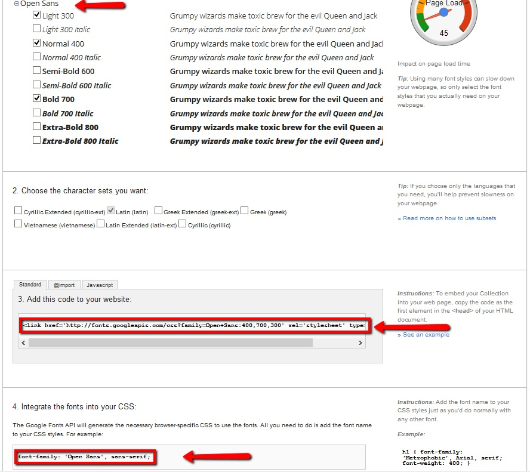
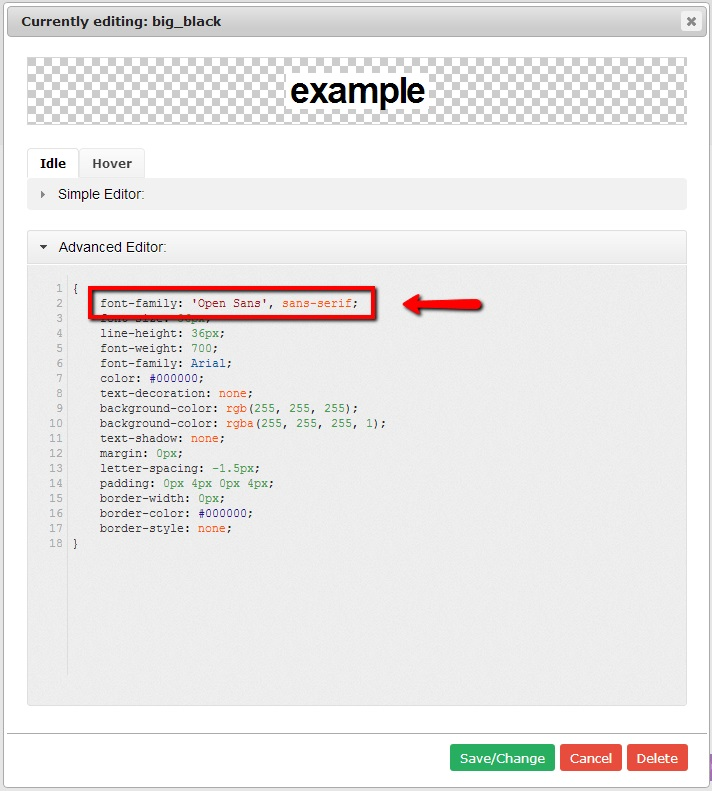
To access the CSS Editor:
- Edit a slide
- Select a caption/image/video
- Open the Layer General Parameters Tab
- Select the Style that you want to edit or to add a new Style, input a new style name (at least two characters needed) Note: the style name is the CSS class!
- Click on Edit Style
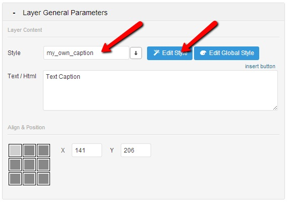
Now you will see the style editor:
- Basic Styles can be easily changed through the Simple Editor Tab.
- Under Font - Family you will find here the earlier mentioned Fonts, you inserted at the Slider Settings Panel.
- For Advanced Settings, you can always open the Advanced Editor Tab and put all your CSS Styles for this CSS Class in here.
- Every change you do, will be directly visible at the top. The example text will show how your style will be at the end!
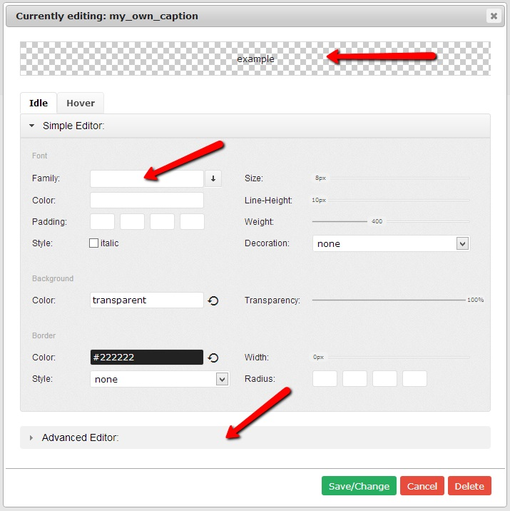
- To enable different styles on hover, click on the Hover tab and check the checkbox "enable :hover"
- The Settings from the Idle state will be copied automatically if there was no hover style before.
To Save your changes, please click on Save/Change and follow the steps shown.
Delete Styles
To delete a Style, select it and click on Style Edit.
Now click on Delete and confirm your deletion.
Note: this can't be undone!
Static Styles/Global Styles
If you want to add Styles that can't be done through the Editor, there is also a solution for you:
- Click on Edit Global Styles. This is in the Layer General Tabs near the Edit Style Button.
- Put your custom CSS into the Static Styles tab. These Styles will be loaded on every page where a Slider is visible.
- Press Save to save your newly added styles.
- The Dynamic Styles tab shows the current styles, that will be loaded on the frontend (only styles that are used by Sliders will be loaded for better loading times)
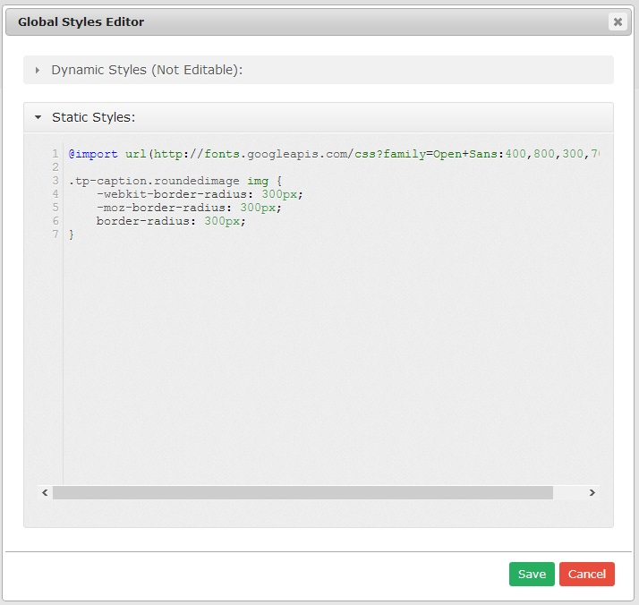
For a Post based Slider, do the following steps:
- First create a Template Slider
- The Layout of the Post Slider will be defined through the Template Slider Settings!
- Add Slides to the created Template Slider, these slides will be used by the Post Slider, that we will create later on.
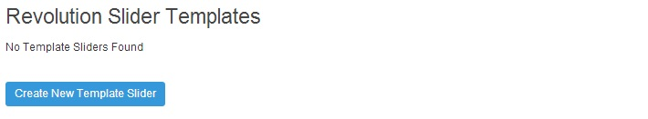
To add dynamic content from Posts to a Slide:
- Edit the Slide from the Template Slider
- Press Add Layer to add a new text layer
- Click on insert post template in the Layer General Parameters Tab
- Choose one of the placeholders in the dialog
- It will now be automatically be the text, this will be filled with Post informations
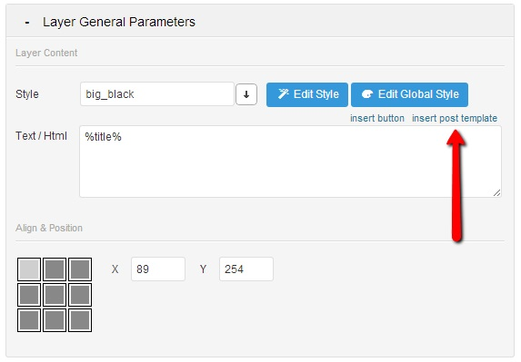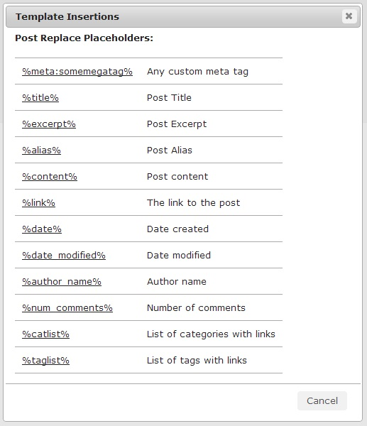
Now Create another Slider, and choose Post or Specific Posts as Source. The difference is, that under Specific Posts, you can choose exactly which Posts you want to use. Under Posts you can Select a whole Categories and/or Tags. Every Post that matches these Categories/Tags will be shown.
Now select unter Template Slider the previously created Template Slider! Save it and insert your Post Slider to your Pages/Posts like a normal Slider.
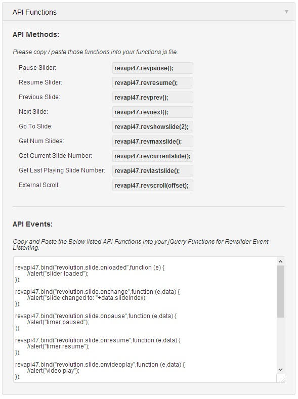
Each Slider can be driven due different API Functions. Simple Copy the API Function you need from this table above and embed it into your function.js or in your custom JavaScript document.
You can use all events and functions per Slider in this case, the 47 is the ID of the Slider, seen on the Slider Overview List on the left.
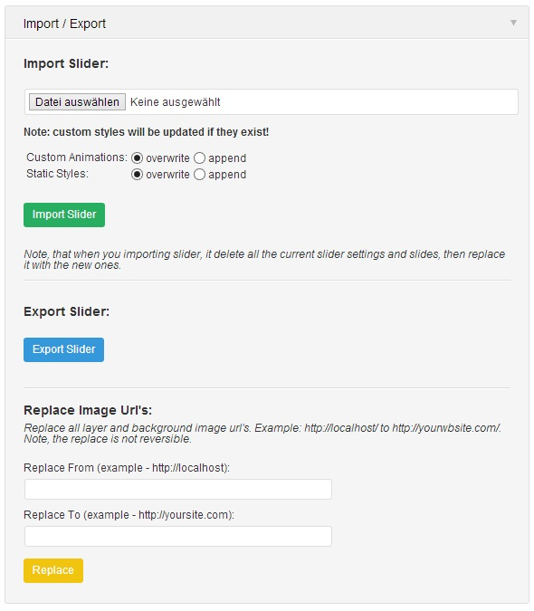
Import
To Import Existing Sliders (i.e. from our FREE EXPORTS) you can use the Import Function to overwrite existing Slider Settings or to create a new Slide from your Exported settings.
Since version 4.0, you can also import custom animations, dynamic styles, static styles and images through this! This means the whole Slider with images can be imported and everything will work without any work!
Choose the Export file (in newer versions this is a .zip. But you can also still use the old .txt files only).
IMPORTANT: Choose if you want to overwrite or append the Custom Animations and Static Styles.
Choosing overwrite means, that if the Animation exists, it will be updated. For the Static Styles means: The whole file with all Styles will be overwritten. This can't be undone so please be sure to Save these file or to be sure, try to use append.
IMPORTANT: Dynamic Styles will always be overwritten, so if you import Sliders from another website, be sure that the exported Slider only uses unique Styles in Captions!
Export
To export the whole Slider click on Export. This will include the slider settings with all slides, dynamic styles, static styles and all images, that the slider is using.
Replace Image URL's
This will replace all layer and background image url's. Example: http://localhost/ to http://yourwbsite.com/.
Note: the replace is not reversible.
For Setting the Rights for WP Backend or using Revslider Libraries Globally / Locally please use the Global Settings. 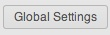
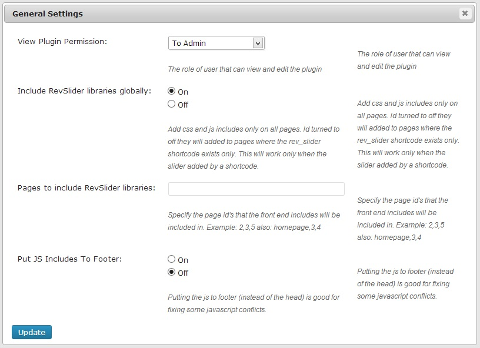
Plugin Permissions are Granted to
Admin
Editor & Admin
Author & Editor & Admin
Include Revslider libraries globally
Add css and js includes only on all pages. Id turned to off they will added to pages where the rev_slider shortcode exists only. This will work only when the slider added by a shortcode.
Pages to include RevSlider libraries
Specify the page id's that the front end includes will be included in. Example: 2,3,5 also: homepage,3,4
Put JS Includes To Footer
Set this to On if you want that your JS Includes are written into the footer instead of the header of your website.
If you face problems with the installation or customization of our product please do not hesitate to contact us on CodeCanyon:
ThemePunch Support
{kind=link}
{kind=link}
{kind=link}